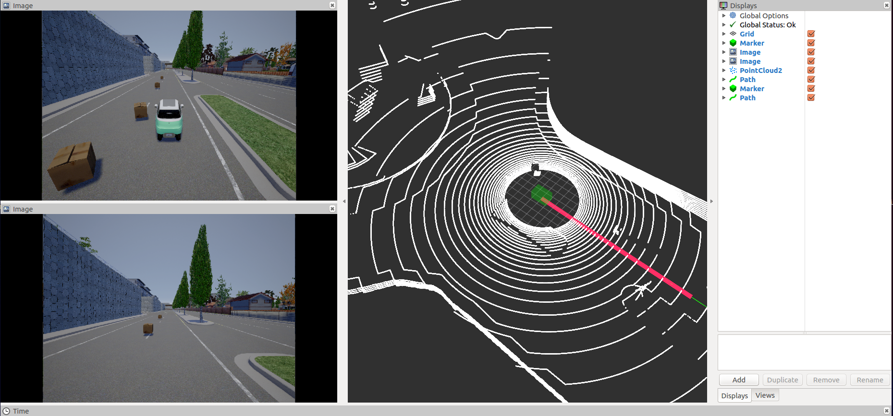
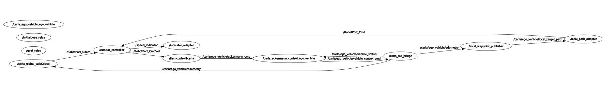

carla_controller
Introduction
Carla_controller 是由开源项目carla改进而成，以支持控制器的开发，仿真和验证。仿真平台支持在现有地图上自定义障碍物和路线，并实时观测控制效果等功能。
Image
运行carla_controller 的界面如下(借用了ros的rviz)

Instruction
carla_controller的ros_graph如下：

need_read
在使用carla_controller仿真平台前，您有必要先了解一下知识，因为他和我们平台的运行息息相关，或许可以帮助你解决一些疑问，请点击上方need_read！
Getting started
现在你可以开始进行你的仿真了，点击上方Getting started！
Interpretation for some packages
| ！Important |
| we still have some "to do list" |
Here are some " to du list"
ß